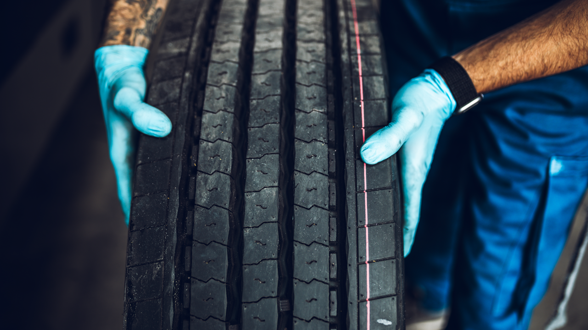

Home / Blog / Transit & Municipal Bus Fleet Retreading
PUBLIC FLEET GUIDETransit agencies and municipal fleets retread buses for real, checkable reasons — budget scrutiny, procurement rules, and duty cycles that don't look like long-haul trucking. Here's the actual case, with sources.
Published September 16, 2026 · Good Hope Retreaders

Transit agencies and municipal public-works fleets buy tires by the hundreds and answer for every dollar of it to a city council, a transit board, or a state auditor — and they're usually the last audience anyone writing about retreading actually addresses by name. That's a gap worth closing, because public fleets face procurement rules, duty cycles, and axle-position regulations that general fleet-retreading content aimed at long-haul trucking simply doesn't cover. Here's what a transit or municipal fleet manager actually needs to know before building out or expanding a retread program.
Budget scrutiny works differently for a public fleet than a private one. A trucking company's tire spend is a line item its owner controls internally; a transit authority's or a public-works department's is a line item that shows up in a public budget a council, a board, or a taxpayer can ask about. That pressure points one direction: toward whichever option is demonstrably cheaper without giving up safety or performance. Retreading is that option on paper — a retreaded commercial tire typically sells for roughly 30% to 50% of the price of a comparable new tire, according to Bridgestone's own commercial retread-savings data, largely because most of a tire's material cost sits in the casing, not the tread layer that wears off and gets replaced.
For a lot of U.S. public fleets, choosing retreads isn't purely a cost call — it's close to a procurement default. Under the Resource Conservation and Recovery Act (RCRA) Section 6002, the EPA's Comprehensive Procurement Guideline (CPG) program designates retreaded tires as a recovered-materials product. Any federal agency, and any state or local agency spending appropriated federal funds — which covers a large share of U.S. transit and public-works purchasing — is required to buy the designated item made with the highest percentage of recovered material practicable when procuring that product category. EPA's own guidance on the program notes that retreads have been used safely on school buses, fire engines, and other public-fleet vehicles for years.
On the legislative side, a bipartisan federal bill — the Retreaded Tire Jobs, Supply Chain Security, and Sustainability Act (S.2790/H.R.3401) — would add a tax credit and procurement preference for U.S.-purchased retreads if it passes; we cover what the bill actually proposes and where it stands in our breakdown of the legislation. Canadian municipal fleets don't have a direct equivalent to the CPG mandate, but the underlying budget logic applies just the same: the Canadian Urban Transit Association (CUTA) reported Canadian transit systems operating 16,145 buses in 2023, with the average bus fleet age climbing toward 9.5 years — an aging, budget-constrained fleet is exactly the profile where a materially cheaper tire program with no safety tradeoff gets real scrutiny.
A transit bus's tire duty cycle doesn't look like a long-haul truck's. Buses spend far more of their working life at low speed, braking and accelerating repeatedly between closely spaced stops, and turning tightly in and out of bus bays, depots, and curb lanes — conditions that wear tread through scrubbing and put sidewalls in repeated contact with curbs, rather than wearing tread evenly over straight-line highway mileage. That's a meaningfully different stress profile than a line-haul tractor-trailer sees, which is part of why bus and coach tires are manufactured specifically to be retreaded more than once, per the Tire Retread & Repair Information Bureau's (TRIB) own guidance for bus fleets, rather than treating retreadability as an afterthought.
Regulation is the other place transit and municipal buses diverge sharply from trucking. Under 49 CFR 393.75(d), no bus may be operated with a regrooved, recapped, or retreaded tire on its front (steer) wheels — a hard federal restriction that applies regardless of how the casing was built or inspected, and unlike the rule for straight trucks (which the US doesn't restrict federally the same way), it's a flat prohibition with no tonnage or load-rating carve-out. In practice, that means a transit or school bus retread program is, by design, a drive- and rear-axle program, and several states — Pennsylvania and Indiana among them — mirror or extend the restriction to single rear wheels in their own vehicle codes. Canadian municipal and school bus fleets face an even broader version of the same restriction: Canada's National Safety Code bars retreads from any steering axle, on any commercial vehicle, not just buses. We cover that full US/Canada steer-axle comparison, including the truck-specific rules, in Retreads on the Steer Axle: Why Canada's Rule Is Stricter Than the US's.
Every retreaded tire, on any axle, still has to meet the federal performance and labeling standard at 49 CFR 571.117 (FMVSS 117), which requires the retreader to brand a new DOT symbol plus the letter "R" onto the sidewall and maintain a NHTSA-assigned plant code and tire identification records — a certification that ties the finished tire's compliance directly to the shop that did the work. We go through what that standard actually requires for a shop running its own line in DOT Certification for an In-House Retread Line.
School buses fall under a similar pattern, with an added layer of state variation: the federal steer-axle restriction applies, and many state pupil-transportation rules go further, barring retreaded, recapped, regrooved, patched, or plugged tires from the steering axle specifically. On drive and rear positions, retreads are routine and long-established — EPA's own recycled-products guidance names school buses directly among the vehicle types retreads have safely served for years. A district or municipal fleet manager evaluating a retread program for school buses needs to check that state's specific pupil-transportation tire rule, not just the federal floor, since state requirements vary and are frequently stricter.
None of the above matters if the casing going into the oven isn't sound — true for a transit authority the same as any private fleet. CVSA's 2026 International Roadcheck, the annual multi-day roadside inspection blitz covering commercial trucks and buses across North America, logged 2,914 tire violations — 20.9% of all vehicle out-of-service violations, the second-largest category behind only brakes. That's general commercial-vehicle inspection data, not a bus-only figure, and it doesn't break results out by retread vs. new tire — we cover exactly what it does and doesn't prove in What CVSA's 2026 Roadcheck Data Actually Shows About Tire Violations. The point that matters for a fleet operating under public scrutiny either way: casing selection and inspection quality is what actually decides whether a retread is safe to run, not whether the tire started life as new rubber. A thorough internal casing check — full 360° visibility on the bead and inner liner with an inspection spreader — is the control that matters, and it's covered in more depth in our retread safety data breakdown.
Set the procurement rules aside and the raw economics still favor retreading for any high-tire-count public fleet. Retreads typically sell for 30% to 50% of a comparable new tire's price, and Bridgestone estimates retreading saves the North American commercial trucking industry roughly $3 billion a year in tire costs industry-wide — savings that scale directly with fleet size, which is exactly the profile of a transit agency running dozens to hundreds of buses. On the sustainability side, TRIB's own industry data puts the combined U.S. and Canadian retread industry's annual impact at roughly 217.5 million gallons of oil saved and 1.4 billion pounds of material kept out of landfills, with the U.S. retread industry alone diverting an estimated 120 million scrap tires from landfills in 2023 — figures that matter directly to any public agency with a sustainability or circular-economy target to report against. We break down the broader scrap-tire diversion picture, including USTMA's own end-of-life tire data, in Where Do Scrap Tires Actually Go?
| Factor | What's different for a public fleet |
|---|---|
| Budget pressure | Publicly scrutinized spend; retreads run ~30–50% of new tire cost |
| Procurement rules | EPA CPG/RCRA §6002 favors recovered-material tires for federally funded U.S. purchases |
| Duty cycle | Frequent stops, curb/scrub wear, tight-radius turns vs. highway mileage |
| Axle restriction | Front/steer wheels: new tires only, federally mandated for all buses (49 CFR 393.75(d)) |
| Certification | Every retread must carry FMVSS 117 DOT+R branding |
| Sustainability reporting | TRIB industry data on oil savings and landfill diversion is citable and auditable |
None of this requires a transit agency or municipal fleet to run its own retread shop — plenty run a qualified outside vendor instead — but it does mean the tire program has real, checkable numbers behind it for a council, a board, or an auditor to see. If your agency is weighing an in-house retread line against an outside vendor, our retreading ROI breakdown and cost-per-mile data cover the numbers that actually decide it.
We supply casing inspection, curing, and building equipment for truck and bus tire retreading, with transparent all-in Canadian pricing and delivery from our Ontario warehouse — manufacturer-direct, no distributor markup. Tell us your fleet size and tire specs and we'll help you work through what a program looks like.
Get a program quote →Send us your requirements and we'll get back to you within 24 hours with pricing and lead times — no obligation.